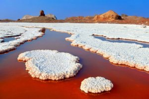
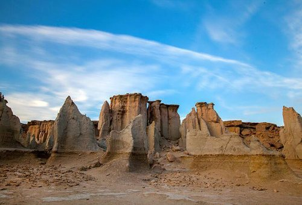

Portuguese Castle
The Fort of Our Lady of the Conception (Portuguese Castle) is located in north of this island. This structure was constructed in the year 1507 AD. on the orders of Alfonso de Albequrque the renounced Portuguese navigator.

Salt Goddess Cave & Mountain
The Hormuz Island in southern Iran is widely known for its red and edible soil but in addition to the dominant red colour of the island

Valley of the Statues in Hormuz
This stunningly beautiful natural site is called 'Valley of the Statues' (Valley of Sculptures, Valley of Imagination or Darreye Tandis-ha) because here tall rocks have been sculpted into strange shapes by the element